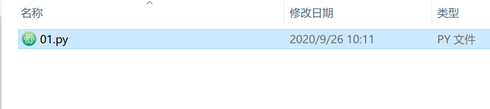
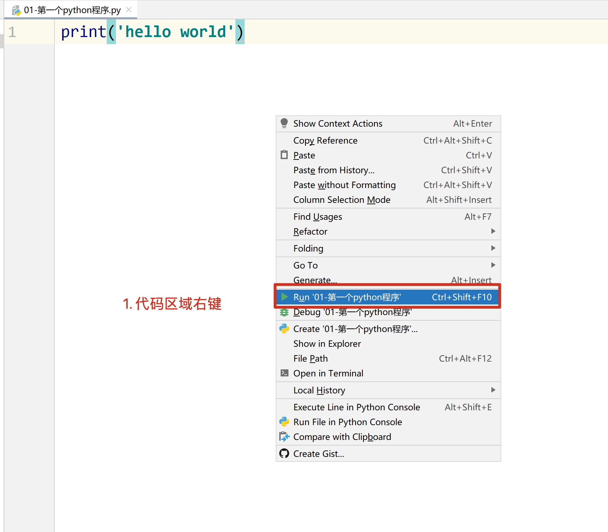

课堂笔记
课堂笔记0. 课程介绍时间安排每天视频目录说明知识掌握程度1. 计算机的组成[了解]2.计算机如何处理程序的[了解]3. 编程语言[了解]4. python 介绍 [了解]5. 第一个 python 程序[掌握]使用记事本(sublime)书写一个 python 代码使用 pycharm 书写 python 代码pycharm 软件的基本设置file 菜单setting - 背景色setting - 设置字体颜色和大小setting -- 设置解释器6. 注释[掌握]7. 变量的定义和使用[掌握]8. 数据类型[掌握]9. 标识符和关键字[掌握]10. 输出[掌握]11. 输入[掌握]12. 数据类型转换[掌握]运算符[掌握]PEP 8 规范常见程序报错
0. 课程介绍
typora
时间安排
上午: 8:30 -- 12:30 (4节课)
下午: 14:30 --- 18:30 (4 节课, 前两节上课, 后两节自习答疑)
晚上: 19:30 -- 21:00
每天视频目录说明
知识掌握程度
- 知道（了解）：只要知道它是怎么样的概念、理论就够了，不需要对它进行更多的讨论。
- 理解：不仅要知道概念，而且要知道来龙去脉。
- 掌握：不仅要知道概念，而且要知道能解决什么问题，甚至要知道在出现不同场景时，能够灵活运用。
- 应用：能够重复操作达成结果，或对某一个结论会用即可，而对这个概念本身的来龙去脉不做追究。
课程介绍
今日课程介绍
1. 计算机的组成[了解]
硬件系统
主机部分
- CPU (中央处理器)
- 内存(4G, 8G, 16G 32G 64G)
外设部分
输入设备
- 键盘
- 鼠标
输出设备
- 显示器
- 音响
外存储器
- 硬盘
软件系统
系统软件
操作系统: 控制硬件运行, 支持其他软件运行
分类:
- Windows(7 8 10)
- Mac
- Linux
- Android
- iOS
应用软件: 自己安装的使用的软件
2.计算机如何处理程序的[了解]
计算机想要运行程序,需要将软件(指令,数据)加载到内存中.
CPU 只能和内存进行交互.
3. 编程语言[了解]
计算机只认识 0 和 1.
编程语言: 就是计算机和人类沟通交流的语言.
常见的编程语言: python , C 语言 C++.
4. python 介绍 [了解]
python 诞生与 1991年, 作者是龟叔
python 解释器的官方实现版本是 C 语言实现
python 的版本:
- python2.x 官方已经停止维护
- Python3.x

5. 第一个 python 程序[掌握]
python: python 解释器, 将 python 代码解释成计算机认识的语言.
pycharm: IDE(集成开发环境), 写代码的一个软件, 集成了写代码, 运行代码,代码调试等功能
写代码的软件除了使用 pycharm 之外,还可以使用 记事本, sublime, vscode ....
使用记事本(sublime)书写一个 python 代码
新打开一个记事本程序
书写
print('hello world!'), 注意,标点符号都是英文保存文件, 文件的后缀是
.py
打开 cmd 窗口, 执行代码
python 代码文件名

使用 pycharm 书写 python 代码
打开 pycharm 软件


创建代码文件

书写代码
print('hello world!')运行代码, 右键运行

查看运行结果

pycharm 软件的基本设置

file 菜单
setting - 背景色

setting - 设置字体颜色和大小

setting -- 设置解释器

6. 注释[掌握]
- 注释是不会执行的
- 注释是对代码的解释说明,是让人看得
- 单行注释的快捷键/取消单行注释
Ctrl /, 可以一次选中多行,给其添加单行注释


7. 变量的定义和使用[掌握]

8. 数据类型[掌握]

9. 标识符和关键字[掌握]
标识符命名规则: 由字母,数字和下划线组成,不能以数字开头
变量的命名规范
- 遵循标识符的规则
- 见名知意
- 使用下划线连接
- 不能使用系统的关键字
关键字: 系统定义好的标识符,具有特殊的作用
不需要刻意的记忆,后续课程中会逐渐学习
10. 输出[掌握]


11. 输入[掌握]

12. 数据类型转换[掌握]


运算符[掌握]
PEP 8 规范
单行注释#后边应该有一个空格

代码文件的最后一行是空行

行内注释需要两个空格

常见程序报错